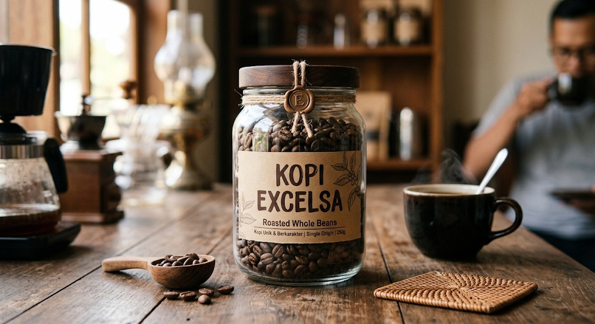
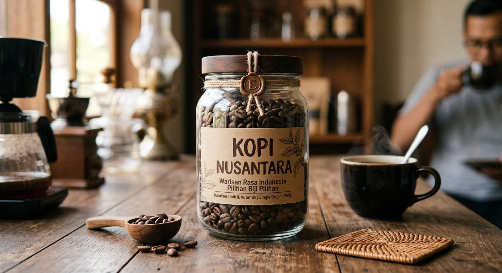
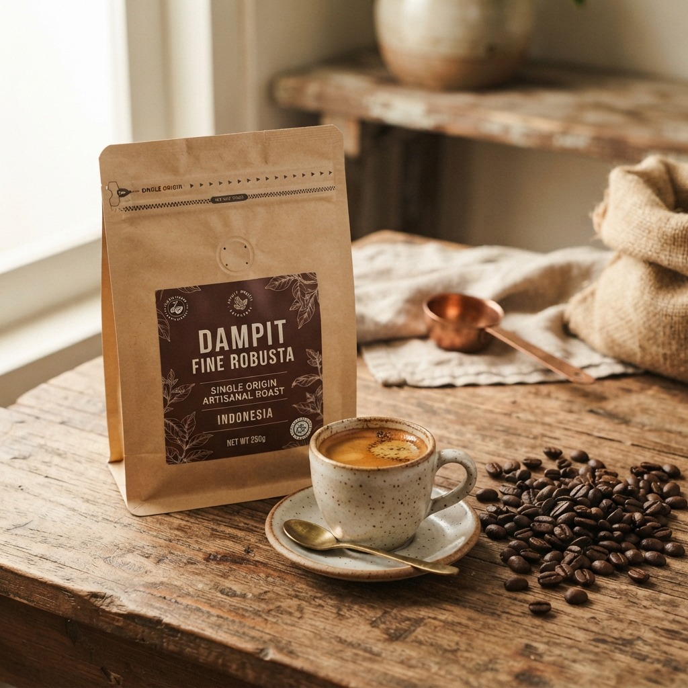
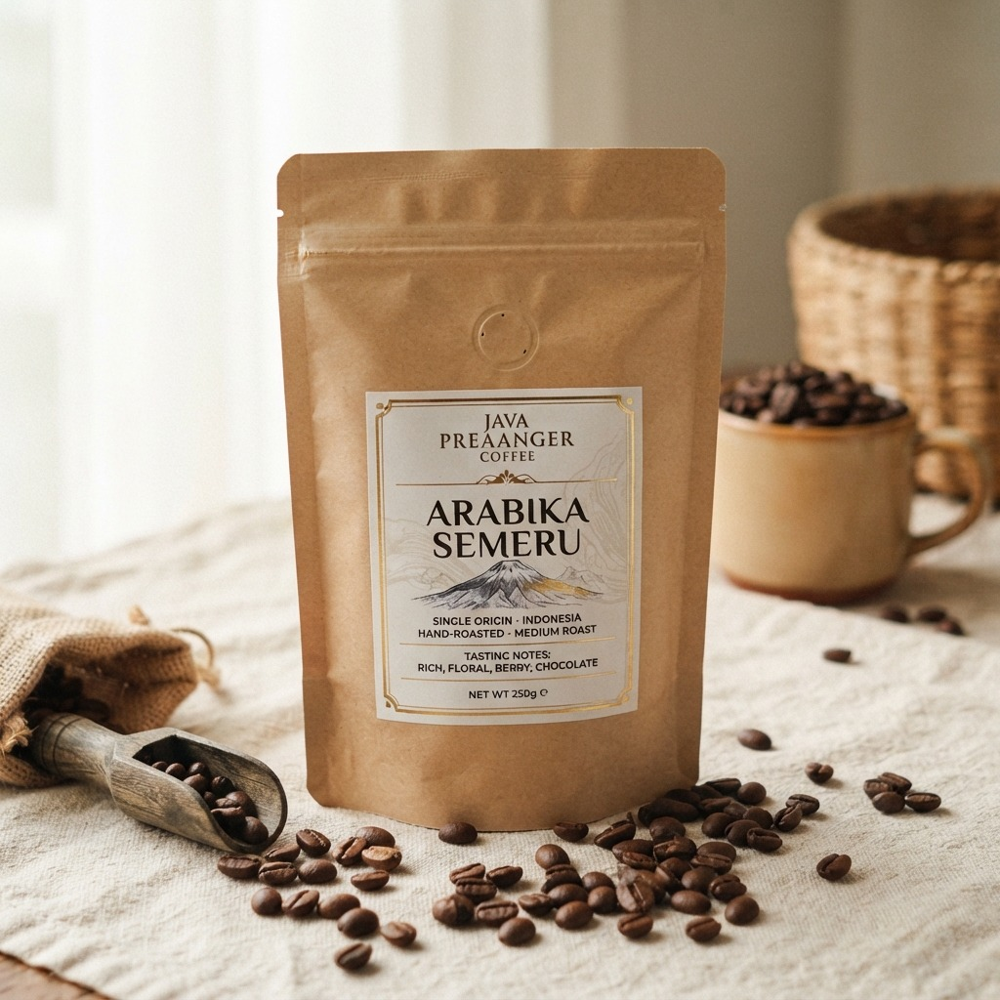

NusantaraExcelsa
Aroma buah yang khas dengan sentuhan nangka dan rasa yang berlapis.
Pelajari lebih lanjutDari kebun lokal, untuk semua
Kami membawa kekayaan rasa kopi Indonesia ke dalam cangkir Anda—dengan biji pilihan, proses yang bertanggung jawab, dan penghormatan pada para petani.

DIRACIK DENGAN HATI · SEJAK 2018Tentang Kopi Nusantara
Kopi Nusantara lahir dari kecintaan pada kopi Indonesia dan orang-orang di baliknya. Kami bekerja bersama petani lokal untuk memilih biji terbaik, menjaga kualitas dari kebun hingga cangkir, dan membagikan karakter unik setiap daerah.
Mari berkenalan →Setiap biji punya cerita dan daerah asal yang kami kenal.
Kualitas rasa dijaga mulai dari panen hingga proses sangrai.
Kemitraan yang saling mendukung dengan petani Indonesia.
Kenali karakter rasanya
Dari rasa yang berani hingga seduhan yang lembut, temukan karakter kopi yang paling dekat dengan Anda.

NusantaraAroma buah yang khas dengan sentuhan nangka dan rasa yang berlapis.
Pelajari lebih lanjut
Pilihan lokalKarakter kuat dan mantap, dengan aroma khas dari perkebunan lokal.
Pelajari lebih lanjut
NusantaraRasa lembut, aroma kompleks, dan keasaman seimbang untuk dinikmati.
Pelajari lebih lanjutAda cerita yang ingin dibagi?